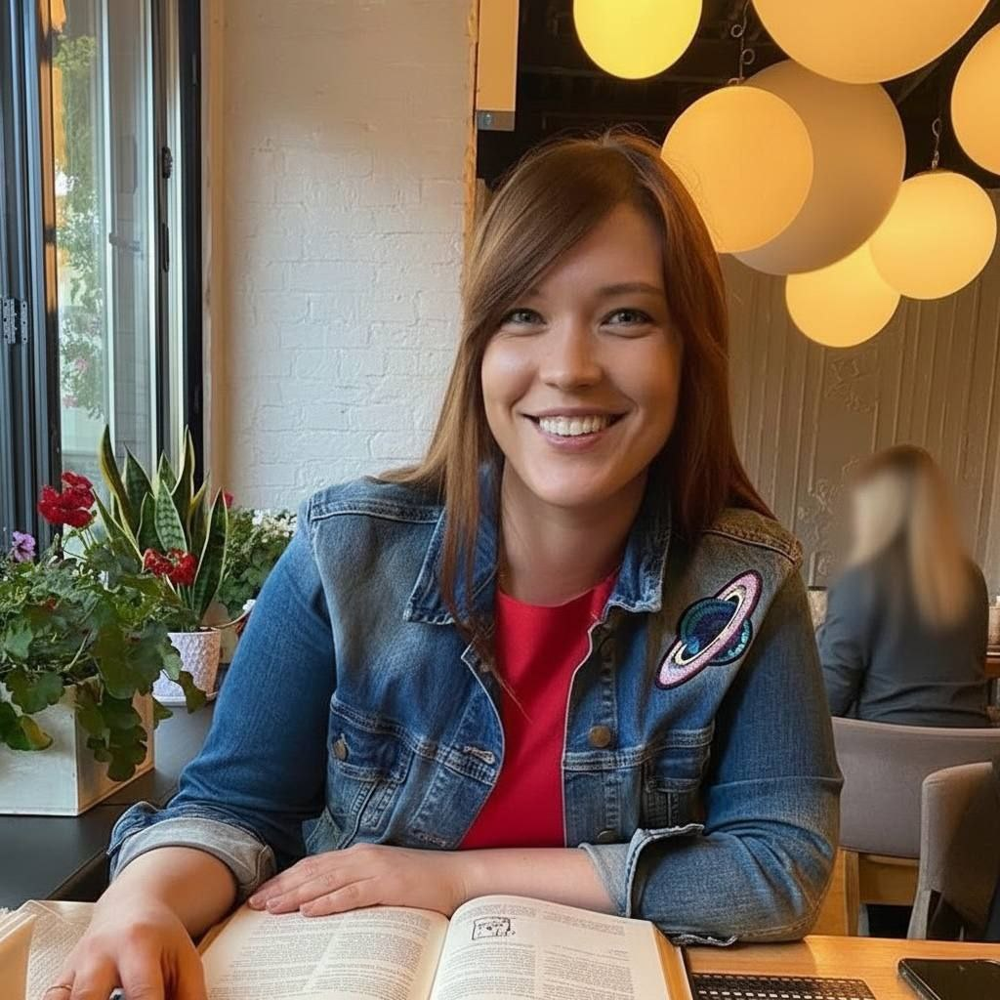

Виктория
Практический психолог, МАК-терапевт, художник нейрограф
Для меня «Психомир» — это не просто название. Это дом. 🏡
Это дом для моих профессиональных убеждений: что помощь должна быть доступной, что в терапии нет места осуждению, а искренний диалог может стать началом больших перемен. Это пространство, где я могу быть не только экспертом, но и живым человеком, который верит, что в каждом из нас есть ресурс для роста и исцеления.
🪷 «Психомир» — это мир, который мы создаём вместе с каждым клиентом. Мир, где можно отбросить маски, дать волю чувствам и, наконец, услышать самого себя.
Я счастлива и чувствую огромную ответственность быть здесь проводником. ✨
Я приглашаю вас в этот мир. Давайте начнём путь к вашему внутреннему спокойствию и гармонии вместе. 🫂
❤️ С теплом, Виктория.